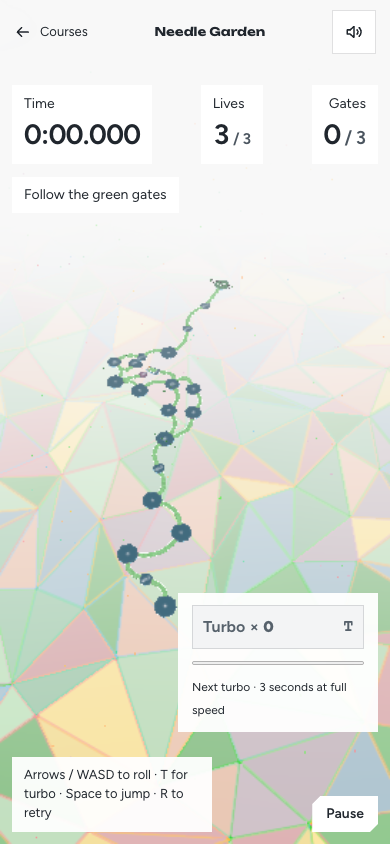
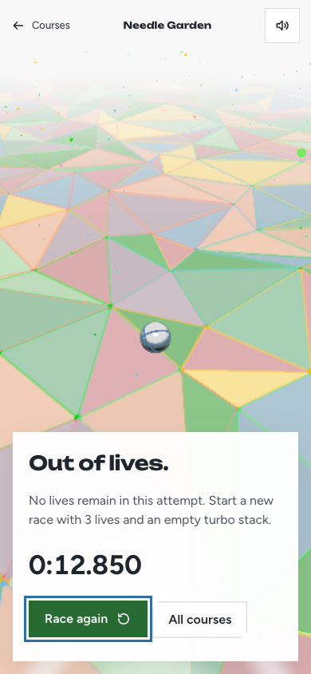
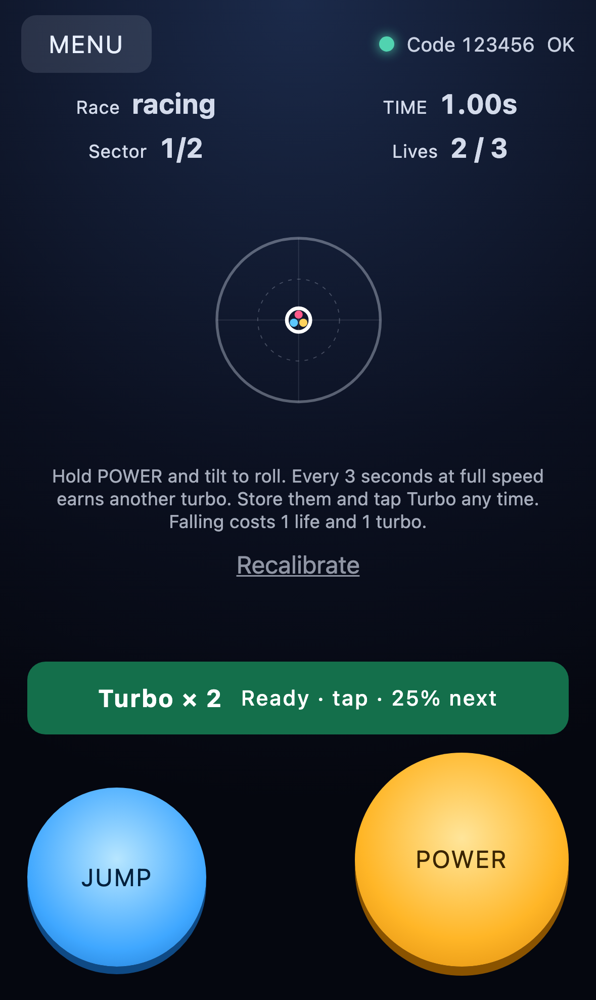
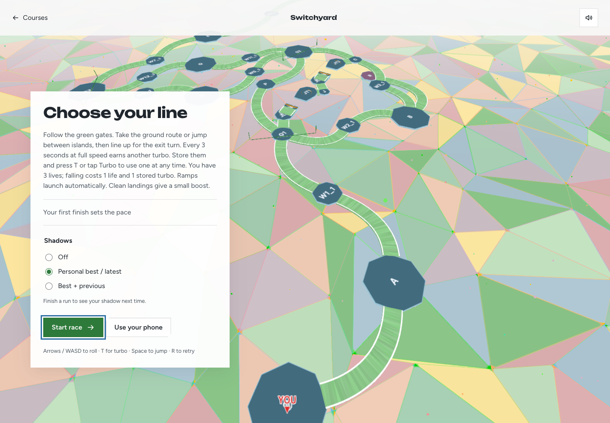
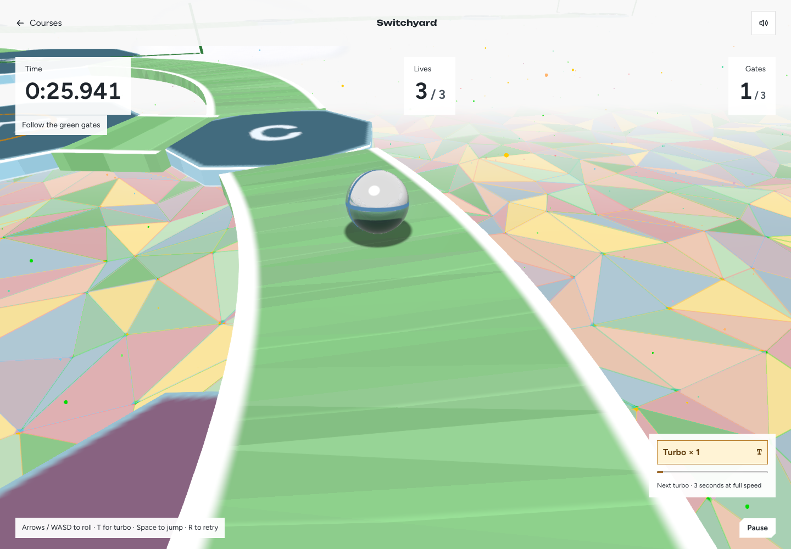

Fourteen race courses
Bends, turbo stacks & lives
All fourteen courses pass the long-straight audit and real Rapier runs with independent replay checks. The ten new mazes have two browser runs each; the earlier ground courses each have a browser run, and Island Leap has ground and leap runs. Screenshots below are unedited browser captures. The ten maze courses retain their different islands, curved ramps and gaps. Turbo banks one charge per uninterrupted three seconds at cruise speed, including corners and flight. Each fall removes one charge and one of three lives; retry begins a fresh attempt.
These results establish clean traversal and rendering. A long straight exceeds three seconds at that course’s cruise speed before accumulating 20° of heading change. The audit includes authored routes and catch returns, not every possible shortcut. The runs do not establish human difficulty, optimal turbo strategy or general missed-jump recovery. Sky Weave remains a 76–79 second reference-controller course; most other maze routes are about a minute. See each course review for specific limits.

Turbo inventory and lives
Three falls end the attempt
Phone controller1. Flow Delta
Play course · Detailed review · Physics evidence
1 long straight(s), 24m threshold.
route-0: 63.867s · route-1: 61.633s · route-2: 64.167s · route-3: 61.425s
72a110013a88f49010b9d32f8638c1979c0d4624a4147e5239ca46a9baf16d21
2. Hairpin Terraces
Play course · Detailed review · Physics evidence
1 long straight(s), 24m threshold.
route-0: 62.017s · route-1: 61.250s · route-2: 62.908s
81edf424d88687f984f9383e04083d25588e4cefa25f2617f4e5f557c031a693
3. Skipping Stones
Play course · Detailed review · Physics evidence
1 long straight(s), 24m threshold.
route-0: 64.900s · route-1: 62.800s · route-2: 70.358s · route-3: 67.625s · route-4: 69.000s · route-5: 65.725s
ae3a6a04b82d7548e08a88f2c1e1ca68fc178f26850e80b96d0c35c7e87bb58a
4. Twin Canyons
Play course · Detailed review · Physics evidence
1 long straight(s), 24m threshold.
route-0: 64.783s · route-1: 63.358s · route-2: 60.458s · route-3: 66.875s
10c24640f869462867352ffc2d3ecd79e9d7feebecae6e7fa4233f545743ee2a
5. Cliff Ribbon
Play course · Detailed review · Physics evidence
1 long straight(s), 24m threshold.
route-0: 64.292s · route-1: 58.983s · route-2: 64.967s
a7bf3be33bc80b1257edcdbdd9c78cfcdba74fa62c728d258a46af655caa8f9e
6. Bankshot Basin
Play course · Detailed review · Physics evidence
1 long straight(s), 24m threshold.
route-0: 61.783s · route-1: 60.392s · route-2: 63.233s
d8a346e87ddd9f745d92197709384d77011ef017b7dfc6b908931f7453e1c635
7. Switchyard
Play course · Detailed review · Physics evidence
1 long straight(s), 24m threshold.
route-0: 64.367s · route-1: 54.967s · route-2: 61.817s · route-3: 64.983s · route-4: 55.825s · route-5: 62.525s
6d7015dd4bd7534c98d72dff3026f25cfc0e48a767faef277854659a84f44397

screenshots/route-0-ready.png
screenshots/route-0-midrun.pngscreenshots/route-0-feature.pngscreenshots/route-0-finish.pngscreenshots/route-2-ready.pngscreenshots/route-2-midrun.pngscreenshots/route-2-feature.pngscreenshots/route-2-finish.png8. Sky Weave
Play course · Detailed review · Physics evidence
0 long straight(s), 24m threshold.
route-0: 77.600s · route-1: 76.258s · route-2: 79.333s
6e285653ecdc66b6e274ab9a757a4538942f8d1ad6daa662615fe2e898d39cba
screenshots/route-0-ready.pngscreenshots/route-0-midrun.pngscreenshots/route-0-feature.pngscreenshots/route-0-finish.pngscreenshots/route-2-ready.pngscreenshots/route-2-midrun.pngscreenshots/route-2-feature.pngscreenshots/route-2-finish.pngscreenshots/route-0-underpass-approach.pngscreenshots/route-0-underpass-exit.pngscreenshots/route-0-underpass.pngscreenshots/route-0-upper-crossing.png 9. Needle Garden
Play course · Detailed review · Physics evidence
1 long straight(s), 24m threshold.
route-0: 67.058s · route-1: 62.292s · route-2: 66.342s · route-3: 61.333s
bd933bc0fd3896d507986f73422f55f972b5d83e719e2d1d42d2012c2faf3688
screenshots/route-0-ready.pngscreenshots/route-0-midrun.pngscreenshots/route-0-feature.pngscreenshots/route-0-finish.pngscreenshots/route-2-ready.pngscreenshots/route-2-midrun.pngscreenshots/route-2-feature.pngscreenshots/route-2-finish.png 10. Redline Relay
Play course · Detailed review · Physics evidence
1 long straight(s), 24m threshold.
route-0: 63.983s · route-1: 66.000s · route-2: 66.083s · route-3: 68.075s · route-4: 65.767s · route-5: 67.767s · route-6: 67.917s · route-7: 69.950s
b90e96c4018b581d771c5541497fac4c2a241c5c18ba468e22eda30e2f423b69
screenshots/route-0-ready.pngscreenshots/route-0-midrun.pngscreenshots/route-0-feature.pngscreenshots/route-0-finish.pngscreenshots/route-7-ready.pngscreenshots/route-7-midrun.pngscreenshots/route-7-feature.pngscreenshots/route-7-finish.png 11. Flow Sprint
Play course · Detailed review · Physics evidence
1 long straight(s), 24m threshold.
solver: 31.683s
43b1aaf3c6436c208d0d671bf11c7d0f0a429a8efa73d938101c0880c29a7db6
screenshots/solver-ready.pngscreenshots/solver-midrun.pngscreenshots/solver-feature.pngscreenshots/solver-finish.png 12. Switchback
Play course · Detailed review · Physics evidence
1 long straight(s), 24m threshold.
solver: 32.683s
3bdc270a029d088a09d5aadf268396a2d906771be7788b9d0bb6d4d8115bcc1a
screenshots/solver-ready.pngscreenshots/solver-midrun.pngscreenshots/solver-feature.pngscreenshots/solver-finish.png 13. Longline
Play course · Detailed review · Physics evidence
1 long straight(s), 24m threshold.
solver: 28.358s
801c9a633b58af0e42e75c1f06326393cddd157959a1a106186c0d70c6c45e2f
screenshots/solver-ready.pngscreenshots/solver-midrun.pngscreenshots/solver-feature.pngscreenshots/solver-finish.png 14. Island Leap
Play course · Detailed review · Physics evidence
1 long straight(s), 30m threshold.
safe: 13.950s · near: 13.908s · far: 12.900s
bbe4412705eb67bfeb76825f1942811f477575e92a9fdf0adde077d247453634
screenshots/far-ready.pngscreenshots/far-midrun.pngscreenshots/far-feature.pngscreenshots/far-finish.pngscreenshots/safe-ready.pngscreenshots/safe-midrun.pngscreenshots/safe-feature.pngscreenshots/safe-finish.png